✦ ✦ ✦
豆荚暑期素描 × 艺术史营
艺术从来就是一场
从符合标准到打破规则的运动史
零基础友好 · 两期 5 天课程
让判断力、游戏规则、自主叙事在画面中逐步生成
悠洋：
在过去几年的课程里，我发现一个很成功的教学切入点是把素描，作为一种理性的视觉思维工具向孩子们介绍，带他们一起用一种研究者的视角去做纸上的构筑游戏。
比起传授技能，我更希望传授规则和方法。当最简单的原理能够被孩子理解，那么在此基础之上的组合就不再是需要按部就班的规矩，而变成了可以自由探索的游戏。
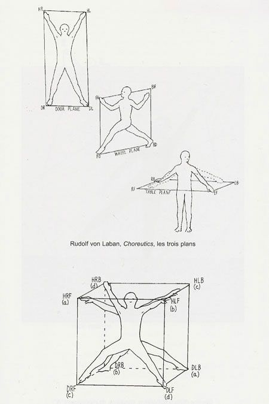
关于课堂的两种典型路径
传统上来讲，为了得到一个好的课堂结果——
一个老师可以用颗粒度非常细的指导，按着孩子的头去深入画面，那么一节课就可以几乎手把手地带着一个绘画基础薄弱的学生生产出一张非常惊艳的作品。
这样一来：孩子在被不断规训课堂纪律、被逼着专注的过程中可能会体验到来课外加班上学的感觉，耐力会得到训练，但也会逐渐对来上课、甚至画画本身都感到消耗和厌倦。
二来：当下结果如果是好的，孩子可以在结束时得到一些正反馈，家长可能会赞许他学到了真东西。
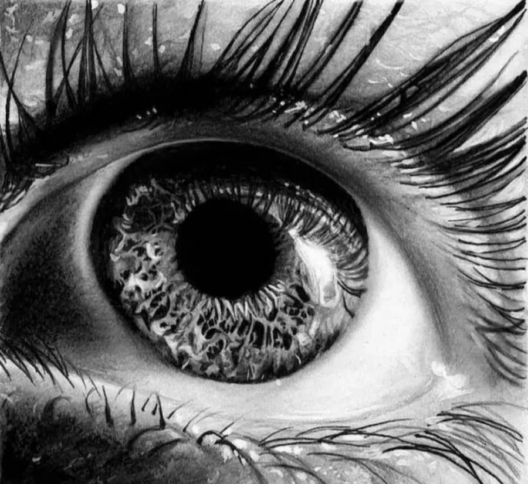
但如果老师想用允许和引导对话的方式去激发想象，孩子可能会天马行空地在纸上做各种创意实验。而这种想象力的激发在话题的不断偏移中，会不可避免地落在身体和语言上——吵闹的课堂，落不到纸面上的手舞足蹈。
而课堂上画面的转译，在没有足够多的手头练习的情况下可能会看起来像胡来。有时候叠加上反复涂改，结果会惨不忍睹。
这样一来：孩子可能课后心情不错，嘴皮子和社交能力越来越好，但留下的作品草率，家长在没参与过程的情况下可能会对带回家的结果感到不知所谓、轻如鸿毛。
二来：对于将来是否能够就靠这样胡来下去拿到结果，会感到猜疑和焦虑。
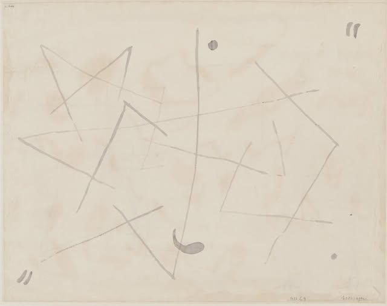
PAUL KLEE / "Sozusagen" (Pour Ainsi Dire), 1933-29
找到可以同时激发兴趣和构建秩序的切入点，
去平衡好艺术中的自由发散 vs. 技能训练，
是每一个真正在乎教育的老师都要去深入研究的课题。
关于这次课程的切入点
去年夏天，我们用素描在二维纸面上构建过三维空间，那时课程的标题叫"开启理性之眼，构建无限空间"。
今年，我想把这件事再往前推一段——
如果说去年练习的是"看见无形的支点"，今年练习的就是去看见每一组规则背后那些隐而不显的支点：艺术家是怎么发现旧规则的边界，又是怎么发明新规则的。
绘画，从来不是一组固定的标准；
它更像一场不断打破又重建的运动。
素描——作为最朴素、也最有研究感的工具——
一直在这场运动里，扮演基础规则的角色。
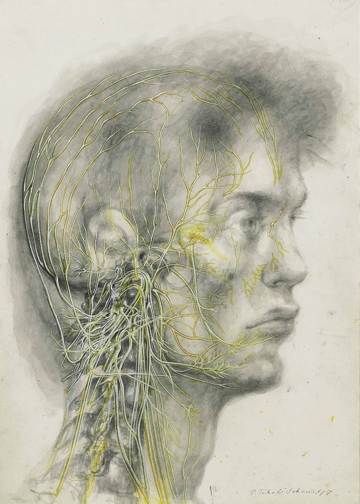
课程主题：在艺术史里，素描是怎么成为每一个艺术家的创作工具的？
7 月 15-25 日，我会在豆荚开设两期 5 天课程：
📐 第一期：7 月 15 日 — 19 日（休一天）
🎨 第二期：7 月 21 日 — 25 日
我们将通过艺术史里几次重要的运动，去看素描怎么作为基础规则，又怎么参与了对规则的打破与重建。
每天聚焦一次运动，孩子们会经历三件事：
第一期 ｜ 从"按规则画"到"打破规则"
7.15 – 7.19
文艺复兴素描 · 达芬奇 / 米开朗基罗
印象派 · 莫奈 / 雷诺阿
塞尚 / 后印象派
立体主义 · 毕加索 / 布拉克
野兽派 / 马蒂斯线条
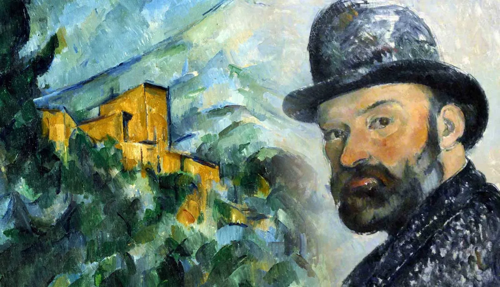
保罗·塞尚（Paul Cézanne，1839-1906）的后期作品试图用最少的技巧来传达自然以及他对自然的印象。他摒弃了艺术传统（尤其是线性透视法则）的沉重影响，越来越依赖于纯粹的笔触来构建整体全景。
第二期 ｜ 从"打破规则"到"重新发明规则"
7.21 – 7.25
包豪斯 / 克利
超现实主义 / 自动绘画 · 米罗 / 马松
抽象表现主义 · 波洛克
极简 / 观念艺术 · Sol LeWitt
涂鸦艺术 · Keith Haring / 巴斯奎特
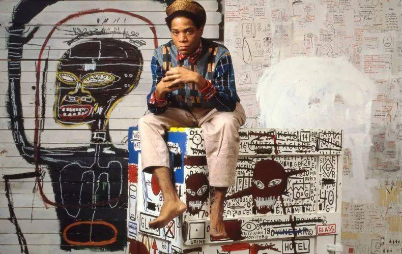
街头起家的美国涂鸦艺术家巴斯奎特（Jean-Michel Basquiat），永远"光芒四射的孩子"。
课堂现场 · 往届学员作品
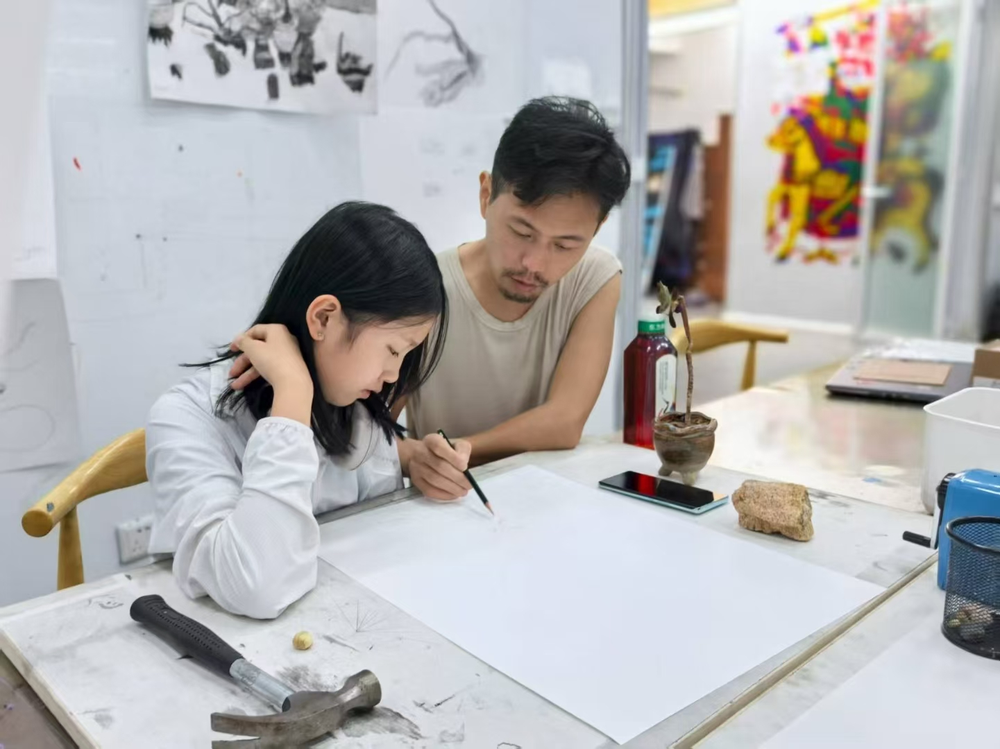
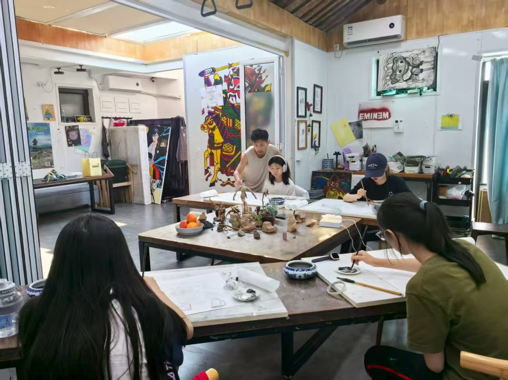
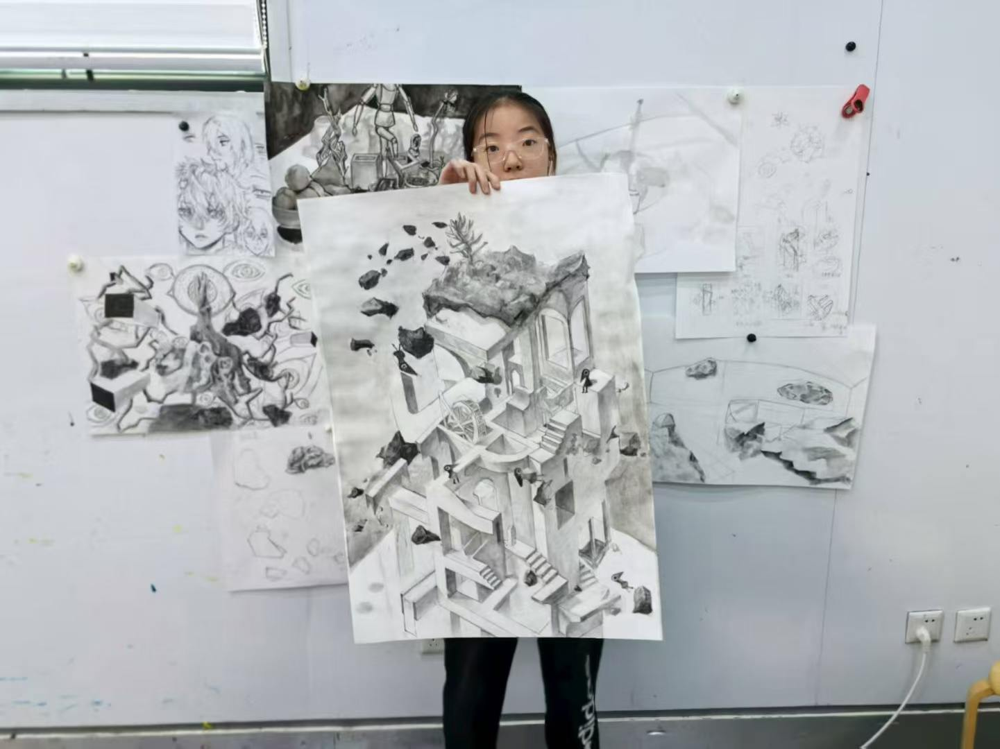
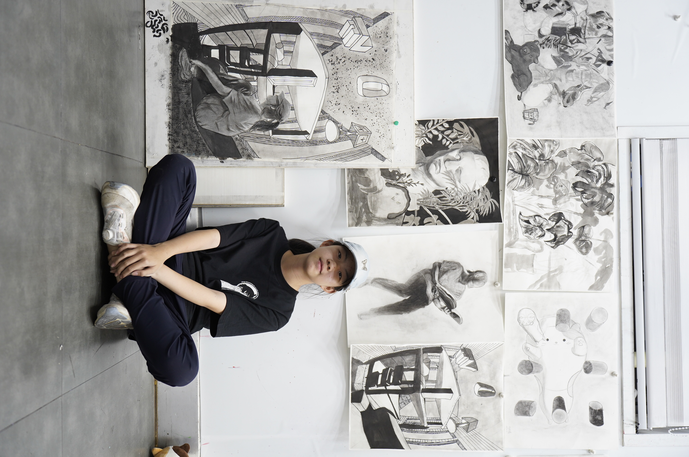
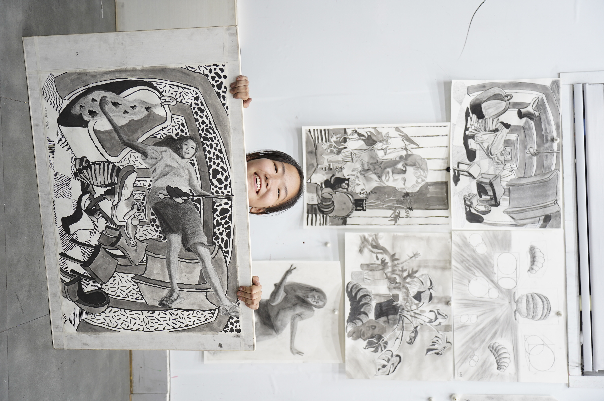
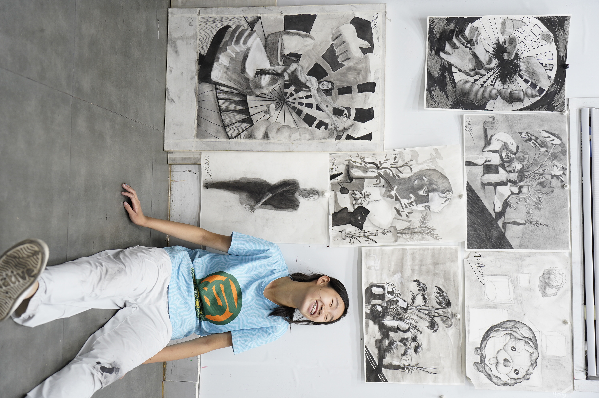
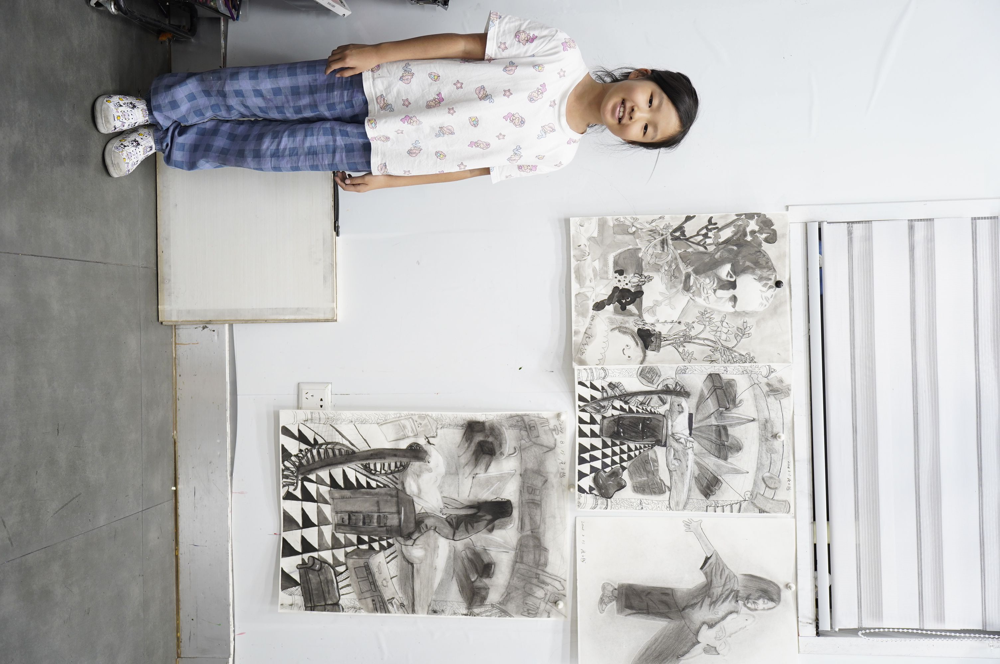
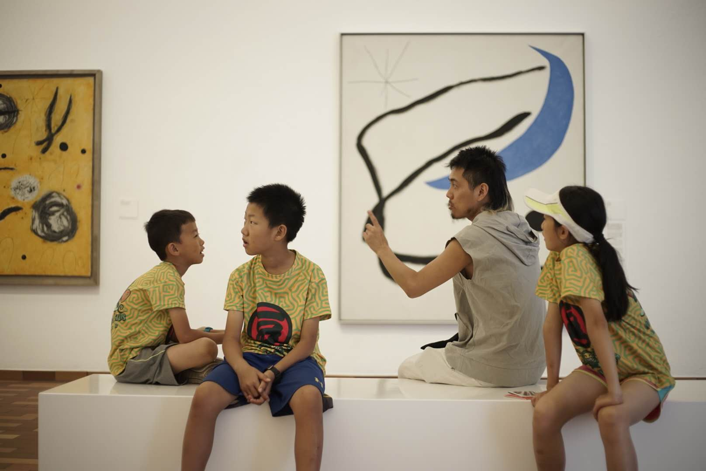
悠洋老师
留英 7 年，环游欧洲，毕业于英国皇家艺术学院。独立动画导演，艺术教育者。费那奇北京动画周共同创始人。自 2018 年起在豆荚进行创意绘画和西方艺术史的教学，2021 年赴美游学，研究 AI，目前往返居住于中美之间。
2026 暑期艺术营 · 招生信息
上课教师：悠洋老师
上课地点：（待定）
招募对象：（待定）
第一期 · 从"按规则画"到"打破规则"
7 月 15 日 — 19 日 每天 9:00-12:00，13:30-16:30
第二期 · 从"打破规则"到"重新发明规则"
7 月 21 日 — 25 日 每天 9:00-12:00，13:30-16:30
艺术从来就是一场
从符合标准到打破规则的运动史。
2026 暑期艺术营
期待和你一起，把这场运动
在自己的纸上重新走一遍。
✦ ✦ ✦